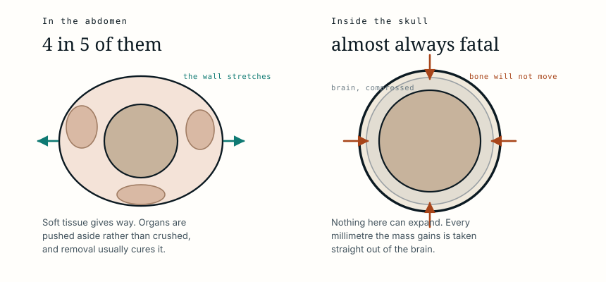

It was benign, and there was nowhere for it to go
The mass inside her head had a spine, a face and hands. It was not a cancer, nothing about it spread, and the operation to remove it worked exactly as planned. She was one year old, and by then the outcome had been settled for a year.
- Specialty
- Paediatric neurosurgery
- Patient
- Girl, 1 year
- Found
- 33 weeks gestation, on routine ultrasound
- At presentation
- Unable to sit or walk; one word of speech; head circumference 56.6 cm
- Imaging
- 13 cm intracranial mass containing limb bones and a spine
- Diagnosis
- Fetus in fetu, not a teratoma
- Removed
- An 18 cm malformed embryo with face, hair, hands and feet
- Capsule contents
- About 50 mL of fluid, confirmed as amniotic
- Resection
- Complete, confirmed on intraoperative MRI
- Outcome
- Uncontrolled seizures; died 12 days after surgery
- 33 weekssomething on the scan
- birtha large head
- 1 yearnot sitting, one word
- theatreopening the capsule
- aftercomplete, and too late
What was seen before she was born
A routine ultrasound at 33 weeks showed the head measuring larger than it should. An MRI was attempted and could not resolve what was filling the space.
She was delivered by caesarean at 37 weeks because she was breech, and her head was visibly larger than normal at birth.
Prenatal ultrasound is the best tool available for finding this, and it succeeds in fewer than one case in five. Most are picked up late in pregnancy or after delivery, because the thing being looked for develops late enough to be missed at the routine mid-pregnancy scan.
What a year of pressure looked like
By her first birthday she could lift her head a little. She could not sit up and she could not walk. She had poor control of her hands, she was incontinent, and her entire vocabulary was one word.
Her head measured 56.6 centimetres, which is roughly what an adult measures and around ten centimetres beyond what is expected at that age. The fluid spaces inside her brain were dilated, because the mass was blocking the normal drainage of cerebrospinal fluid.
None of this was sudden. It is what a brain looks like after spending its entire developmental window being pressed against the inside of a skull.
What the scan actually showed
The CT found a mass thirteen centimetres across, with a smooth clear border and, inside it, bone.
Not flecks of calcification. Long bones, the shape of limbs, and a spinal column, visible across successive slices in the outline of a fetus.
That last detail is what made the diagnosis, because it is the formal criterion. A mass is only called a fetus in fetu if it has a vertebral column, and the reason is developmental rather than descriptive: forming a spine means the tissue passed through gastrulation and laid down a notochord, organising itself around an axis the way an embryo does.
Her tumour markers were normal, which mattered for the next question.
The distinction that changes the answer
The competing diagnosis is a mature teratoma, and separating the two is the part of this case with the widest application.
A teratoma is a tumour built from all three germ layers that can produce recognisable tissue, including hair and teeth, but cannot assemble a body. It has scattered bone rather than a skeleton, no organisation around an axis, and it carries a real risk of malignancy.
A fetus in fetu has an axial skeleton, organs in anatomical relationships, skin over the outside, and sits inside a membrane. In this child the capsule was lined with squamous epithelium and the fluid inside it was confirmed as amniotic. There was, in the most literal sense, an amniotic sac inside her skull.
The practical consequence is about what happens after surgery. A teratoma may be malignant and may recur as cancer, so tumour markers are followed for years. Malignant change in a fetus in fetu is described but rare.
We have a different kind of parasitic twin on this site, a heteropagus, where the incomplete twin is attached externally and shares the host's circulation. This is the other pattern: fully enclosed, inside the body, with no attachment to the outside world at all.
What they found
The skull was opened and a white capsule was exposed within the brain tissue. About fifty millilitres of thick brown fluid was drained from it, and as the membrane opened a finger-like limb came through the gap.
What was removed was an embryo eighteen centimetres long, still coated in vernix, with a head, hair, a mouth, eyes, a trunk, a forearm, hands and feet.
An MRI performed during the operation confirmed that all of it was out.

By any surgical measure that is a success, and it is also where the case turns. The mass was gone and the pressure was relieved, and none of that gives back a year of development that did not happen.
Why the outcome was decided long before
She did not regain consciousness after the operation. She had seizures that could not be controlled, and twelve days later her family stopped treatment.
Where these grow is the whole prognosis. Four in five sit in the retroperitoneum, behind the abdominal organs, and there the outlook after removal is generally good: soft tissue gives way as the mass enlarges, the abdominal wall stretches, and organs are displaced rather than destroyed.
Inside a skull none of that is available. The bone does not yield, so every millimetre the mass takes is taken from brain. By the time the child was old enough for the operation, the compression had been running for her entire life and had already determined what her brain would become.
The published outcome for intracranial cases is close to uniformly fatal, and this case is a clear illustration of why. Nothing was malignant. Nothing spread. It was benign tissue in a place with no spare room.
What this case teaches
A spine is what separates this from a teratoma, and it is a statement about development rather than a curiosity: the tissue organised itself around an axis the way an embryo does, grew skin, and sat in its own amniotic sac. None of it was cancer and none of it spread. The reason she died is that four in five of these grow in an abdomen, where a wall can stretch and organs move aside, and hers grew inside a skull, where nothing gives and the space can only come out of brain. The operation removed all of it and confirmed as much on the table. The year of pressure before it had already settled the outcome.
Adapted from Qin X, Chen X, Zhao X, Wang B, Yao L and Niu H, “Intracranial Parasitic Fetus in a Living Infant: A Case Study with Surgical Intervention and Prognosis Analysis,” American Journal of Case Reports 2024;25:e944371, from Peking University International Hospital, Beijing. The clinical details, imaging findings and outcome are summarised in the author's own words rather than reproduced. Background on the diagnostic criteria for fetus in fetu, its distinction from teratoma and its distribution by site is drawn from that paper and from the literature it reviews. The figures in the original include photographs of the resected specimen and are not reproduced here. The diagram is original to MedicaseHub and may be reused freely. This article is not medical advice. Read the full disclaimer.
One case, written up properly, when there is one worth sending
No schedule and no filler. When a case turns out to have something in it that is worth the time to explain, it goes out. Unsubscribe in one click.
Free · no spam · your address is never shared · built with KitRelated cases
- A parasitic twin, and what it was joined toNo heart of its own, perfused entirely by its sibling.
- It was never cancer. It still had to come out.Benign and harmless are different words when the skull has no spare room.
- The surgery was free. The cure was not.A visiting team removed a childhood sarcoma at no cost. The treatment that decides survival was months away.